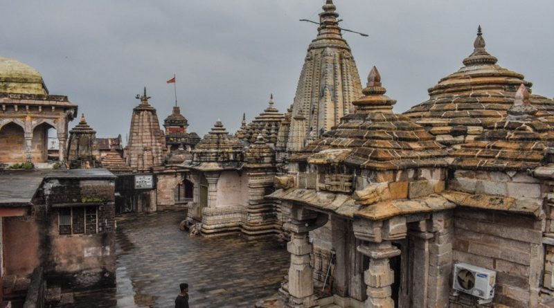
 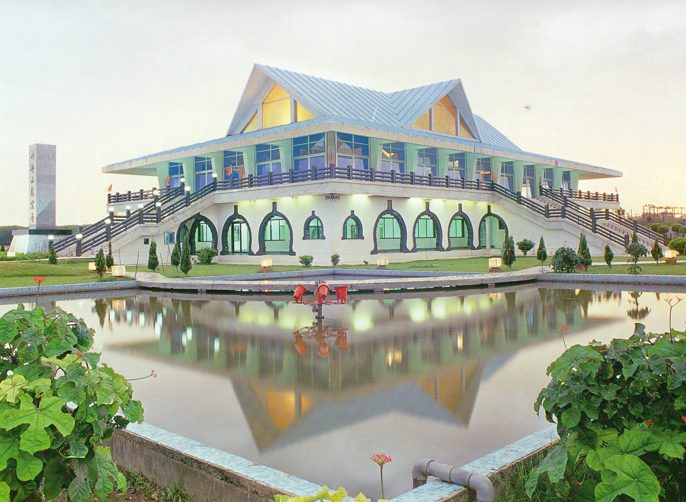
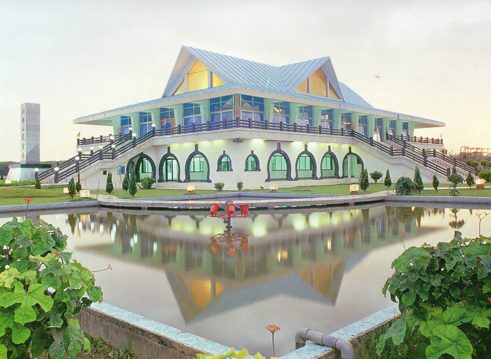
 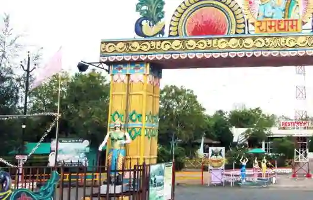
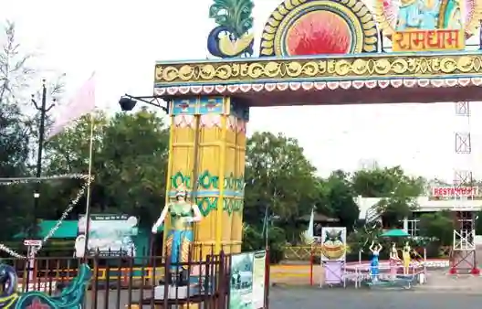
 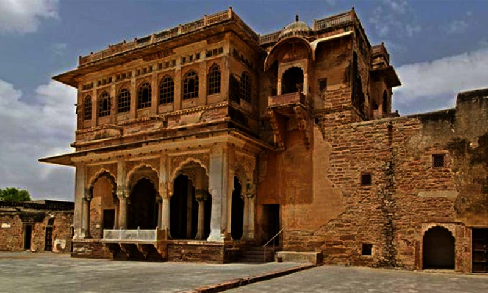
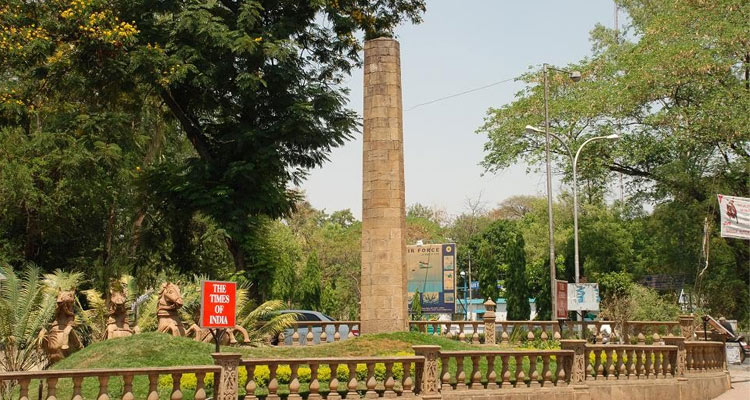
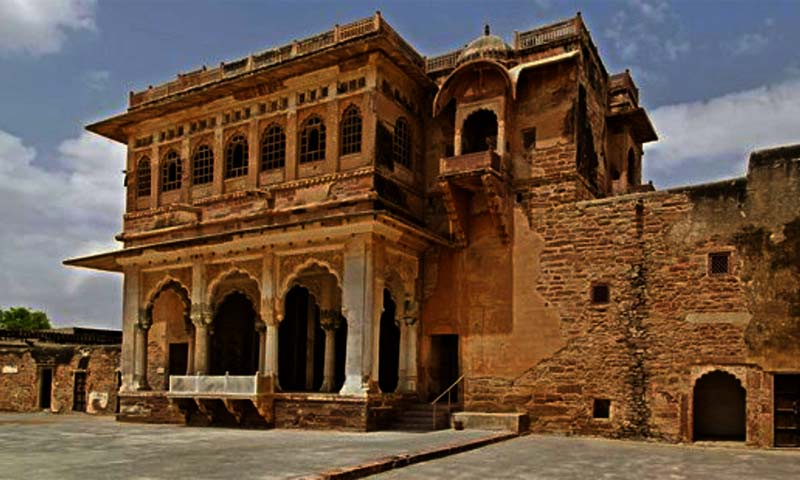
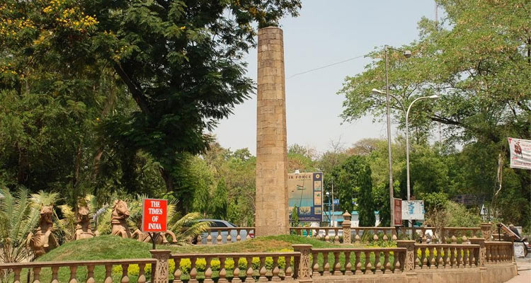
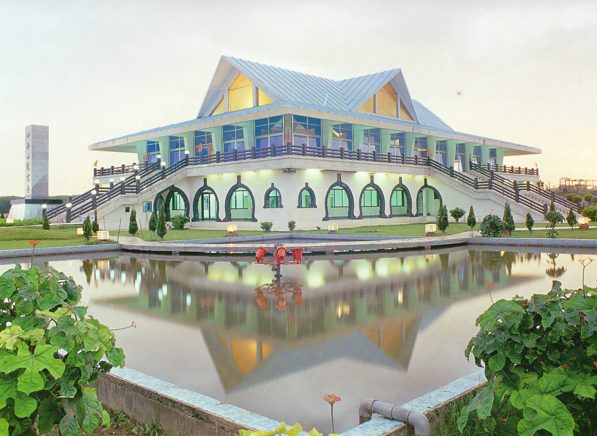
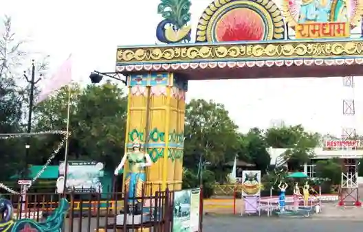
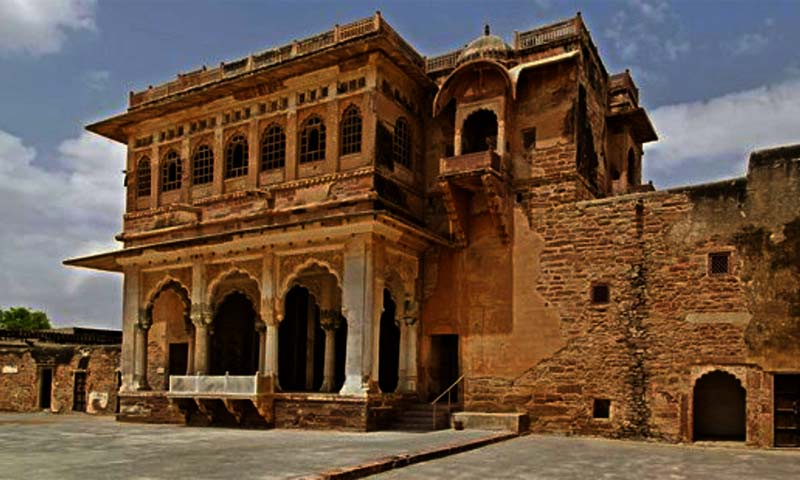
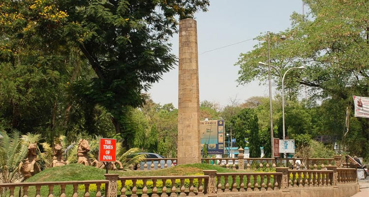
Deekshabhoomi is in Nagpur, Maharashtra, a location regarded as a sacred place, prernabhoomi (inspiring land) of social revolution being atheist and a preparations for social actions against class discrimination, inequality also the first pilgrimage center of Ambedkarite Buddhism in India.
Ganesh Tekdi Temple also known as "Takdicha Ganapati" means Ganpati of hills. Situated atop a hill on Station Road, this temple is about 250 years old and has immense religious significance for Hinduism. The construction of the temple started in 1978 and was completed in 1984.
The Vidarbha Cricket Association Stadium, also known as New VCA Stadium, is a cricket stadium in Nagpur, Maharashtra, India. It is the largest cricket stadium in India in terms of field area, and the qualities of the stadium have been praised by the International Cricket Council.
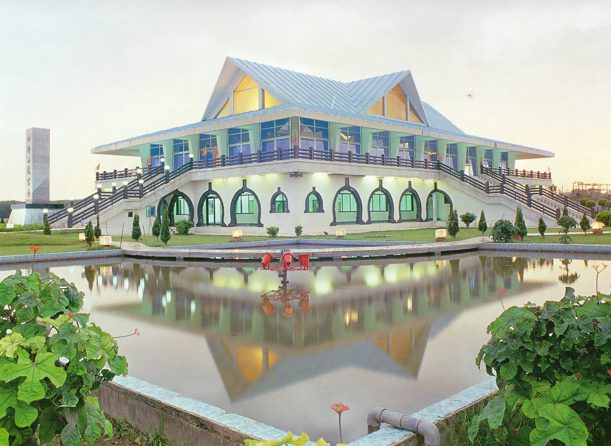
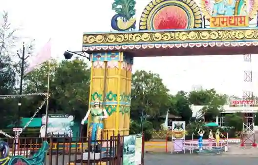
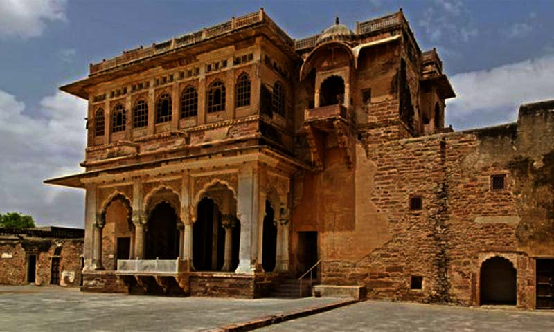
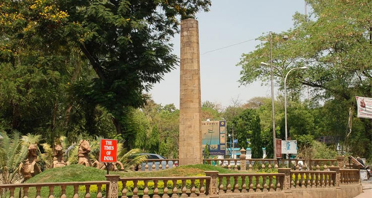
Zero Mile Stone is a monument built by British during the Great Trigonometrical Survey of India in 1907 in Nagpur, Maharashtra.[1][2] The Zero Mile Stone consists of a pillar made up of sandstone and another small stone representing the GTS Standard Bench Mark, and four stucco horses that were added later.
Know More ...VNIT Nagpur, established in 1960, is one of the oldest NITs in the country. All the programmes offered at VNIT Nagpur are approved by the UGC. VNIT Nagpur is an institute of national importance and has been ranked 32 and 68 by NIRF 2022 under the Engineering and Overall categories, respectively.
Know More ...
Haldiram's was founded in 1937 by Ganga Bishan Agarwal, fondly known as Haldiram Ji in his household; as a retail sweets and namkeen shop in Bikaner, Rajasthan.
Know More ...© 2023 Complex UI. All Rights Reserved.
Back to Top